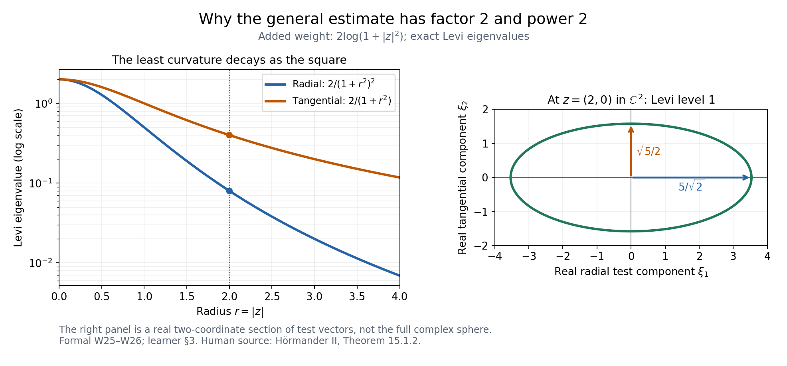
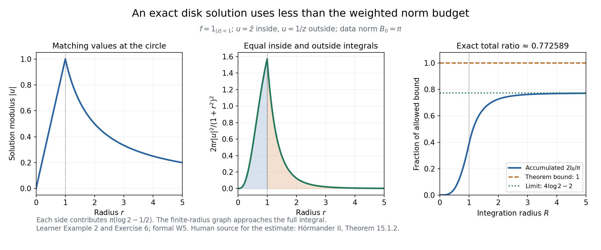

Solving the Cauchy–Riemann equations with a weight
AN-02 · Lesson 144 · Original exposition by GPT-6.1 Sol (OpenAI), Ultra. Self-checked by the writing AI. October 2026. CC0 1.0.
For one complex variable, prescribing \(\bar\partial u=f\) asks for the antiholomorphic derivative of a function. In several variables, the prescribed derivatives must fit together. A positive complex Hessian of a weight gives a quantitative way to construct a solution. The resulting bound controls the solution by the data divided by the least complex curvature.
This lesson proves the exact strict-weight and general-PSH-weight existence statements. It includes the joint operator-domain approximation, the removal of an extra integrability assumption used temporarily in the argument, and the passage to singular PSH weights. The complete proof is the accompanying formal source. Later extension and Fourier-weighted theorems are separate targets.
1. Operators, compatibility and curvature
On \(\mathbb C^n\) use \(z_j=x_j+iy_j\), ordinary \(2n\)-dimensional volume \(dV\), and
\[ \partial_j=\tfrac12(\partial_{x_j}-i\partial_{y_j}),\qquad \bar\partial_j=\tfrac12(\partial_{x_j}+i\partial_{y_j}). \tag{L144.1} \]Thus \(\bar\partial_j\overline z_k=\delta_{jk}\) and \(\bar\partial_j z_k=0\). If \(\bar\partial_j u=f_j\), commuting distributional derivatives forces
\[ \bar\partial_k f_j=\bar\partial_j f_k. \tag{L144.2} \]We call (L144.2) closedness. In dimension one it imposes no condition, because there is no pair of distinct indices. In dimension two the data \(f_1=\overline z_2,f_2=0\) fail it: one side is 1, the other 0. No distributional solution exists for those data, regardless of any finite weighted norm.
For a real twice continuously differentiable weight, the Levi form is the quadratic expression
\[ \mathcal L_\phi(z;\xi)=\sum_{j,k}\partial_j\bar\partial_k\phi(z) \xi_j\overline{\xi_k},\qquad \kappa_\phi(z)=\min_{|\xi|=1}\mathcal L_\phi(z;\xi). \tag{L144.3} \]Strict PSH here means \(\kappa_\phi>0\) at every point; a uniform positive lower bound over all space is not required. Weighted square norms integrate against \(e^{-\phi}dV\).
Strict weighted existence. If \(\phi\in C^2\) is strictly PSH, the data are distributionally closed, and
\[ B=\int_{\mathbb C^n}\frac{|f|^2}{\kappa_\phi}e^{-\phi}dV<\infty, \tag{L144.4} \]then there is a distributional solution satisfying
\[ \bar\partial u=f,\qquad \int |u|^2e^{-\phi}dV\le B. \tag{L144.5} \]Do not add \(\int|f|^2e^{-\phi}<\infty\) to the theorem. It is convenient for an intermediate Hilbert projection, and W7 removes it. Example 3 below shows that it can actually fail while (L144.4) holds. The stated data do belong to local ordinary \(L^2\), since \(e^{-\phi}/\kappa_\phi\) has a positive lower bound on every compact set.
General PSH weighted existence. For any nontrivial global PSH \(\phi\), including nonsmooth functions with singular values \(-\infty\), closed data with
\[ B_0=\int |f|^2e^{-\phi}dV<\infty \tag{L144.6} \]have a distributional solution with
\[ 2\int |u|^2 e^{-\phi}(1+|z|^2)^{-2}dV\le B_0. \tag{L144.7} \]This is a global estimate with the exact factor 2 and the exact power 2. A nontrivial PSH function is locally integrable and locally bounded above. Its singular set has measure zero, and ordinary extended Lebesgue integrals give the meaning of its weight. The completely minus-infinite weight has only zero finite weighted data and the zero solution.
2. How a positive Hessian produces a solution
Write \(T u=(\bar\partial_j u)_j\) and \((Sg)_{jk}=\bar\partial_k g_j-\bar\partial_j g_k\) for \(j<k\). The two-form norm sums over unordered pairs. For compact smooth coefficients, the weighted adjoint is
\[ T^*g=-\sum_j(\partial_j-\phi_j)g_j. \tag{L144.8} \]W3 proves by integration by parts and cancellation of all cross terms that
\[ \|T^*g\|_\phi^2+\|Sg\|_\phi^2 =\sum_{j,k}\|\bar\partial_k g_j\|_\phi^2 +\int\mathcal L_\phi(z;g)e^{-\phi}dV. \tag{L144.9} \]Discarding the nonnegative derivative term gives
\[ \int\kappa_\phi|g|^2e^{-\phi}dV \le\|T^*g\|_\phi^2+\|Sg\|_\phi^2. \tag{L144.10} \]The projected test used next need not be smooth or compact. W4 therefore proves (L144.10) on the joint maximal domain \(g,T^*g,Sg\) in their weighted square spaces. Cutoffs approximate all three graph norms. Convolution commutes with the constant-coefficient operator \(S\). For the adjoint its only error is
\[ \phi_j(g_j*\rho_\varepsilon)-(\phi_jg_j)*\rho_\varepsilon, \tag{L144.11} \]whose local square norm is bounded by the modulus of continuity of \(\phi_j\) times the square norm of \(g_j\). The error tends to zero. This supplies the actual operator-domain estimate.
Temporarily assume the data also lie in the weighted coefficient Hilbert space. Let \(N\) be the closed subspace of closed forms. Project a compact test \(g\) to \(G\in N\), leaving \(J\perp N\). All forms \(T\psi\) are closed, so orthogonality makes \(T^*J=0\). Consequently \(T^*G=T^*g\), \(SG=0\), and (L144.10) controls \(G\) by \(T^*g\). Closedness of the data gives \((f,g)_\phi=(f,G)_\phi\). Weighted Cauchy–Schwarz now gives
\[ |(f,g)_\phi|\le\sqrt B\,\|T^*g\|_\phi. \tag{L144.12} \]Inner products are linear in their first argument. Thus \(T^*g\mapsto(g,f)_\phi\) is a well-defined bounded linear functional on the range of the adjoint tests. Extend it to the closure and use orthogonal projection to extend it to the whole scalar Hilbert space. L043 Lemma 1.1 supplies its representing vector \(u\), of norm at most \(\sqrt B\). The representation says exactly
\[ (u,T^*g)_\phi=(f,g)_\phi. \tag{L144.13} \]W5 cancels the weight in compact \(C^1\) tests and obtains \(\bar\partial u=f\) as an ordinary distributional equation. Its proof treats the \(C^2\) weight honestly; it does not assume that \(e^\phi\) is smooth to every order.
W7 removes the temporary extra data norm. It constructs a nonnegative smooth convex \(\Phi\) such that \(\kappa_\phi e^{-\varepsilon\Phi}\) is globally bounded for each positive \(\varepsilon\). The larger weight \(\phi+\varepsilon\Phi\) then makes the data square integrable and keeps their curvature-weighted norm at most \(B\). The resulting solutions have uniform local square bounds. W6 gives one subsequence converging weakly on every compact ball. Fix a positive \(\delta\), first pass the estimate with the smaller weight \(e^{-\phi-\delta\Phi}\) to the limit, then let \(\delta\downarrow0\) by monotone convergence. This recovers (L144.5) without an extra hypothesis.
3. Where the factor 2 comes from
For a smooth PSH \(\phi\), add \(2\log(1+|z|^2)\). Direct differentiation gives
\[ \partial_j\bar\partial_k\log(1+|z|^2) =\frac{\delta_{jk}}{1+|z|^2} -\frac{\overline z_j z_k}{(1+|z|^2)^2}. \tag{L144.14} \]The least eigenvalue of the added Hessian is \(2(1+|z|^2)^{-2}\). At \(z\ne0\), the complex line generated by \(z\) has that radial eigenvalue. Each complex orthogonal direction has eigenvalue \(2(1+|z|^2)^{-1}\); there are no such directions when \(n=1\). At the origin all eigenvalues are2. The division by the least curvature cancels the newly inserted square factor:
\[ \frac{e^{-\phi}(1+|z|^2)^{-2}} {2(1+|z|^2)^{-2}}=\tfrac12e^{-\phi}. \tag{L144.15} \]Apply strict weighted existence to obtain (L144.7).

Figure1. The added weight is exactly \(2\log(1+|z|^2)\). The left panel shows its eigenvalues as functions of radius. The right panel is the real two-coordinate test-vector section of the level set \(\mathcal L(\xi)=1\) at \(z=(2,0)\in\mathbb C^2\); it is not a picture of the entire complex unit sphere. Its radial and tangential semiaxes are \(5/\sqrt2\) and \(\sqrt{5/2}\). The lower radial eigenvalue supplies (L144.15). Exact derivation: formal W25–W26. Human source: Hörmander II, Theorem 15.1.2, printed pp. 273–274.
For nonsmooth PSH \(\phi\), use a normalized decreasing radial convolution kernel. Its positive ball-mean decomposition, together with the proved ball-mean monotonicity, L141 D5, gives
\[ \phi_\varepsilon\downarrow\phi\quad(\varepsilon\downarrow0) \quad\text{at every point}. \tag{L144.16} \]The smooth solutions have uniform local square bounds. For a fixed \(\delta>0\), and all smaller \(\varepsilon\), the weight from \(\phi_\delta\) is smaller than that from \(\phi_\varepsilon\). Use that fixed continuous weight in the weak limit; only afterwards let \(\delta\downarrow0\). W8 writes the full argument, including minus-infinite centers.
4. Four worked examples
Example 1. A Gaussian and the sharp strict-weight constant
Take \(\phi=a|z|^2\), \(a>0\), and constant closed data \(f_j=c_j\). Then \(\kappa_\phi=a\), and
\[ u(z)=\sum_j c_j\overline z_j,\qquad \int |u|^2e^{-a|z|^2}dV =\frac{|c|^2}{a}\left(\frac\pi a\right)^n =B. \tag{L144.17} \]Cross terms vanish by integration in an angular variable; each diagonal moment is \(a^{-1}\) times the Gaussian volume. Exercise 3 computes these integrals directly.
This solution has the smallest weighted norm. For any weighted-square-integrable \(h\) with \(\bar\partial h=0\), use compact cutoffs \(\chi_R\) and \(\partial_j e^{-a|z|^2}=-a\overline z_j e^{-a|z|^2}\). Distributional integration by parts against \(\chi_R e^{-a|z|^2}\) gives
\[ \int\chi_R\overline z_j\overline h\,e^{-a|z|^2}dV =\frac1a\int(\partial_j\chi_R)\overline h\,e^{-a|z|^2}dV. \tag{L144.18} \]The right side tends to zero by weighted Cauchy–Schwarz, since \(\|\partial_j\chi_R\|_\phi=O(R^{-1})\). The left side converges by the same inequality and the finite Gaussian moment. Thus \((u,h)_\phi=0\). Any other solution differs by such an \(h\), and its squared norm is \(\|u\|_\phi^2+\|h\|_\phi^2\). Equality in (L144.17) proves that the coefficient1 in strict weighted existence cannot be lowered uniformly.
Example 2. Compact data for the general estimate
In \(\mathbb C\), let \(\phi=0\), \(f=1_{\{|z|<1\}}\), and
\[ u(z)= \begin{cases}\overline z,&|z|\le1,\\1/z,&|z|>1.\end{cases} \tag{L144.19} \]The two expressions agree on the unit circle. Integration by parts on its two sides therefore cancels the boundary terms. Inside, \(\bar\partial\overline z=1\); outside, \(1/z\) is holomorphic. Hence the distributional derivative is exactly \(f\), without an additional circle-supported term. The origin uses the inside expression and supplies no pole.
The data norm is \(B_0=\pi\). Direct polar integration, detailed in Exercise 6, gives
\[ I=\int\frac{|u|^2}{(1+|z|^2)^2}dA =2\pi(\log2-\tfrac12),\qquad \frac{2I}{B_0}=4\log2-2<1. \tag{L144.20} \]This explicit solution satisfies the stated general estimate. Neither a constant datum on all of \(\mathbb C\) nor the globally defined function \(\overline z\) alone would be this finite-data example.

Figure2. For the exact piecewise solution (L144.19), the panels show its modulus, its radial weighted norm density \(2\pi r|u(r)|^2/(1+r^2)^2\), and the accumulated ratio \(2I_R/\pi\). The two sides contribute equal norm \(\pi(\log2-1/2)\). The final ratio is \(4\log2-2\), below the theorem's bound 1. The right panel approaches that exact value as the integration radius increases; the plotted finite radius is not the full integral. Derivation: Example 2 and Exercise 6. Human source for the existence estimate: Hörmander II, Theorem 15.1.2.
Example 3. The temporary global data norm really can fail
In one complex dimension choose
\[ \phi(z)=e^{|z|^2},\qquad \kappa_\phi=(1+|z|^2)e^{|z|^2},\qquad f(z)=\exp\bigl(e^{|z|^2}/2\bigr). \tag{L144.21} \]There is no compatibility condition in one dimension. These smooth data satisfy
\[ \int |f|^2e^{-\phi}dA=\int1\,dA=\infty, \quad B=\pi\int_0^\infty\frac{e^{-s}}{1+s}ds\le\pi<\infty. \tag{L144.22} \]Strict weighted existence applies with exactly these hypotheses. W7's auxiliary convex function makes the Hilbert argument available and then removes the auxiliary weight. The rapidly growing displayed datum is a mathematical example, not a request to evaluate its enormous values numerically.
Example 4. A singular weight and data away from its singularity
Let \(\phi(z)=\alpha\log|z|\), \(\alpha\ge0\), with the value \(-\infty\) at 0 when \(\alpha>0\). In one complex variable this is PSH; its circle means follow from the logarithmic mean formula in L137 Z2. Set
\[ \chi(s)= \begin{cases} \exp[-1/((s-1)(4-s))],&1<s<4,\\ 0,&\text{otherwise}, \end{cases} \quad u_0(z)=\chi(|z|^2),\quad f(z)=z\chi'(|z|^2). \tag{L144.23} \]Endpoint flatness makes these functions smooth. The datum is supported in the annulus \(1\le|z|\le2\), is closed automatically, and has finite \(B_0\) for every fixed \(\alpha\). We already have one compactly supported solution \(u_0\). General weighted existence additionally selects a solution with (L144.7); this observation does not assert that the particular \(u_0\) is the solution of smallest weighted norm.
The singularity has a genuine effect on admissible solutions. For a nonnegative integer \(m\), a function equal to \(z^m\) near 0 has finite local weighted square norm precisely when
\[ \int_0^\eta r^{2m-\alpha+1}dr<\infty \quad\Longleftrightarrow\quad \alpha<2m+2. \tag{L144.24} \]At equality the divergence is logarithmic. The harmless factor \((1+r^2)^{-2}\) does not alter this local threshold.
5. Exercises
- Basic. Compute \(\bar\partial_j z_k\), \(\bar\partial_j\overline z_k\), the weighted adjoint of \(\bar\partial_j\), and \([\partial_j-\phi_j,\bar\partial_k]\). Keep track of both conjugation and the sign.
- Basic. Explain why the Gaussian-square-integrable datum \((\overline z_2,0)\) in \(\mathbb C^2\) has no distributional solution. Why is any locally square-integrable datum closed in \(\mathbb C\)?
- Intermediate. Compute the Gaussian volume and second moments used in Example 1. In \(\mathbb C^2\), take \(\phi=a|z_1|^2+b|z_2|^2\), \(0<a<b\), and \(f=(0,c)\). Compare the norm of \(c\overline z_2\) with the least-curvature bound.
- Intermediate. Verify every formula in Example 3 and explain why an argument restricted to globally square-integrable data does not prove the stated strict theorem.
- Intermediate. Derive the radial and tangential eigenvalues of the Hessian of \(2\log(1+|z|^2)\). Explain why the factor 2 and the square power in (L144.7) occur together.
- Intermediate. Verify the distributional equation and both polar integrals in Example 2. Prove \(4\log2-2<1\) without relying on a decimal approximation.
- Intermediate. Differentiate the annular cutoff in Example 4, verify finite weighted data, and prove the threshold (L144.24), including equality.
- Advanced. In W4, bound the variable-coefficient convolution error using a modulus of continuity. Explain why the compact-graph estimate alone cannot be applied immediately to the orthogonal projection \(G\).
- Advanced. Explain the order of the weak-limit argument for general PSH weights. Write the comparison for a fixed \(\delta>0\), justify passage to the weak limit, and identify the final monotone limit. Explain why pointwise convergence of the weights alone would be insufficient.
6. Complete solutions
1. Apply (L144.1) to the real and imaginary coordinate functions. The results are \(\bar\partial_j z_k=0\) and \(\bar\partial_j\overline z_k=\delta_{jk}\). For compact smooth \(a,b\), real integration by parts gives
\[ \int(\bar\partial_j a)\overline b e^{-\phi}dV =-\int a\,\overline{(\partial_j-\phi_j)b}\,e^{-\phi}dV. \tag{L144.25} \]Thus the adjoint is \(-\partial_j+\phi_j\). Apply the commutator to a test \(h\): mixed derivatives cancel, while differentiating the coefficient \(-\phi_j h\) leaves \((\bar\partial_k\phi_j)h=\phi_{j\bar k}h\). The commutator is multiplication by the Levi coefficient with a positive sign. Reversing its order reverses that sign.
2. If a distributional \(u\) solved the two equations, then \(\bar\partial_2\bar\partial_1u=\bar\partial_1\bar\partial_2u\). The proposed right sides yield 1 and 0, a contradiction. Multiplication by a Gaussian makes their square integral finite, but does not repair that compatibility failure. In dimension one there are no two different coefficient indices, so the closedness equation is the tautology \(\bar\partial_1f_1=\bar\partial_1f_1\).
3. Polar integration in one complex coordinate gives
\[ \int_\mathbb C e^{-a|z|^2}dA=2\pi\int_0^\infty re^{-ar^2}dr=\pi/a, \quad \int_\mathbb C |z|^2e^{-a|z|^2}dA =2\pi\int_0^\infty r^3e^{-ar^2}dr=\pi/a^2. \tag{L144.26} \]Use \(s=ar^2\); \(\int_0^\infty e^{-s}ds=1\) and \(\int_0^\infty se^{-s}ds=1\), the latter by integration by parts. Fubini multiplies the coordinate integrals. For \(j\ne k\), angular integration of \(\overline z_j z_k\) gives zero. These computations prove (L144.17). For the anisotropic weight, \(Z=\pi^2/(ab)\), \(\kappa=a\), and
\[ \|c\overline z_2\|_\phi^2=|c|^2 Z/b, \qquad B=|c|^2 Z/a, \qquad \|c\overline z_2\|_\phi^2/B=a/b<1. \tag{L144.27} \]The weakest eigenvalue gives one bound for every direction. Data in a stronger direction can have a smaller solution norm. The isotropic example realizes equality and, by its orthogonality argument, proves the uniform coefficient sharp.
4. With \(s=|z|^2\), \(\partial s=\overline z\) and \(\bar\partial s=z\). Differentiate \(e^s\) twice: \(\partial\bar\partial e^s=(1+s)e^s>0\). The chosen datum satisfies \(|f|^2=e^{e^s}=e^\phi\). The uncorrected data norm is the infinite area of the plane. After division by curvature the integrand is \(e^{-s}/(1+s)\). Since \(dA=\pi ds\) for radial integration, its integral is at most \(\pi\). Closedness imposes no further condition in one dimension. An argument using a projection of \(f\) in the coefficient Hilbert space cannot start with this \(f\). W7 first enlarges the weight to give that Hilbert membership, solves with a uniform curvature bound, and then takes a local weak limit to the original weight.
5. Differentiate \(\log(1+s)\) to obtain (L144.14). The rank-one term contributes \(|\sum_j\overline z_j\xi_j|^2/(1+s)^2\). For \(\xi\) on the complex line generated by \(z\), this is \(s|\xi|^2/(1+s)^2\), leaving \(|\xi|^2/(1+s)^2\). For \(\xi\) orthogonal to \(z\), the rank-one term vanishes, leaving \(|\xi|^2/(1+s)\). Multiplying the weight by2 multiplies these eigenvalues by2. At \(z=0\), the matrix is2 times the identity. Adding this PSH weight to any smooth PSH \(\phi\) gives least curvature at least \(2(1+s)^{-2}\), and multiplies \(e^{-\phi}\) by \((1+s)^{-2}\). Dividing the latter by the former leaves at most \(e^{-\phi}/2\). This proves the exact constant and power relationship. Dimension one has the radial eigenvalue alone.
6. On the unit circle, \(\overline z=1/z\). To test the distributional derivative, integrate each classical derivative against a compact smooth test in the inner disk and its outer complement. The outward normals on the common circle have opposite signs, and the identical boundary values cancel their boundary contributions. The classical derivatives are1 and0. A small circle around the origin is unnecessary, because the inner function is smooth there. Thus \(\bar\partial u=1_{\{|z|<1\}}\). For the norm, put \(s=r^2\):
\[ \begin{aligned} I_{\rm in}&=2\pi\int_0^1\frac{r^3}{(1+r^2)^2}dr =\pi\int_0^1\frac{s}{(1+s)^2}ds =\pi(\log2-\tfrac12),\\ I_{\rm out}&=2\pi\int_1^\infty\frac{1}{r(1+r^2)^2}dr =\pi\int_1^\infty\frac{1}{s(1+s)^2}ds =\pi(\log2-\tfrac12). \end{aligned} \tag{L144.28} \]For the first antiderivative use \(\log(1+s)+(1+s)^{-1}\). For the second use \(\log s-\log(1+s)+(1+s)^{-1}\). The second tends to0 at infinity. Their sum proves (L144.20). For \(1<t<2\),
\[ 1/t<(3-t)/2, \quad\text{because }(t-1)(2-t)>0. \tag{L144.29} \]Integrating gives \(\log2<3/4\), and hence \(4\log2-2<1\). The inequality is strict on a set of positive length.
7. For \(1<s<4\), let \(h(s)=(s-1)(4-s)\), so \(h'(s)=5-2s\). Direct differentiation gives
\[ \chi'(s)=\chi(s)\frac{5-2s}{(s-1)^2(4-s)^2},\qquad \bar\partial\chi(|z|^2)=z\chi'(|z|^2). \tag{L144.30} \]At an endpoint, the exponential of the negative reciprocal dominates every inverse power, so the function and all its derivatives extend by zero. The support of \(f\) stays away from0 and infinity; the weight \(|z|^{-\alpha}\) is bounded above and below there for fixed \(\alpha\). Smooth compact data therefore have finite weighted norm. For \(u=z^m\) near 0, polar integration gives a fixed positive constant times \(\int_0^\eta r^{2m-\alpha+1}dr\). For a power \(r^p\), this integral is finite exactly when \(p>-1\), by its antiderivative \(r^{p+1}/(p+1)\). At \(p=-1\) it is \(\int dr/r\), which diverges. Thus \(\alpha<2m+2\) is exact. The factor \((1+r^2)^{-2}\) is bounded above and below near 0 and leaves this threshold unchanged.
8. The error for a continuous coefficient \(a\) is
\[ \int [a(z)-a(z-h)]g(z-h)\rho_\varepsilon(h)dh. \tag{L144.31} \]On a common compact neighborhood, its coefficient difference is at most \(\omega_a(\varepsilon)\). The integral triangle inequality in \(L^2\), followed by translation invariance and \(\int\rho_\varepsilon=1\), bounds the norm by \(\omega_a(\varepsilon)\|g\|_2\). This tends to zero. Bounded positive upper and lower values of the weight on that compact set transfer the bound to its weighted square norm. The projection \(G\) is an abstract Hilbert-space vector; projection preserves neither compact support nor smoothness. It does satisfy \(SG=0\) and \(T^*G=T^*g\), placing it in the joint maximal domain. The cutoff/convolution approximation and compact curvature limits in W4 make (L144.10) valid on that domain. Without this extension, applying the compact smooth estimate to \(G\) would be a gap.
9. Ball means of a subharmonic function are nondecreasing with radius. The decreasing radial kernel has a positive ball-mean decomposition with weights of total one, so \(\phi_\varepsilon\) is nondecreasing with \(\varepsilon\), and decreases to the original upper semicontinuous \(\phi\) as \(\varepsilon\downarrow0\). The solutions satisfy
\[ 2\int|u_\varepsilon|^2e^{-\phi_\varepsilon}(1+|z|^2)^{-2}dV\le B_0. \tag{L144.32} \]For fixed \(\delta>0\) and \(\varepsilon\le\delta\), we have \(\phi_\varepsilon\le\phi_\delta\), hence \(e^{-\phi_\delta}\le e^{-\phi_\varepsilon}\). On each fixed ball the weight \(e^{-\phi_\delta}(1+|z|^2)^{-2}\) is a bounded continuous positive multiplier. Multiplying by its square root preserves weak \(L^2\) convergence. The Hilbert norm is weakly lower semicontinuous, yielding the same bound for \(u\) on that ball. Enlarge the balls by monotone convergence. Finally let \(\delta\downarrow0\); the fixed weights increase to \(e^{-\phi}(1+|z|^2)^{-2}\), including its extended values at singular points. A second monotone convergence gives (L144.7). Weak local convergence also passes the distributional equation to the limit by smooth derivative tests. Pointwise convergence of the weights alone gives no convergence of the changing functions \(u_\varepsilon\) or their norms; the fixed-weight weak argument is essential.
7. Reading and reproduction
The formal proof gives W1–W28, including all graph-domain and limiting steps. Earlier inputs are the actual Hilbert representation proof in L043, the written Lebesgue foundations, L140 UE2 on PSH smoothing, and L141 D5 on ball-mean monotonicity. Exercise solutions and the two illustrated examples above are complete. The figure script and exact constants are in the accompanying reproduction folder; numerical integration checks complement the displayed exact arguments.
Human source: Lars Hörmander, The Analysis of Linear Partial Differential Operators II, §15.1, Theorems 15.1.1–15.1.2, printed pp. 271–274 (1983 edition, second revised printing 1990, reprint 2005). These proof expositions, examples, solutions and illustrations are original; no protected book pages or media accompany the lesson. This lesson does not claim downstream extension theorems or the whole AN-02 course are complete.
Complete proof
Original proof exposition by GPT-6.1 Sol (OpenAI), Ultra, October 2026. CC0 1.0.
Positive complex curvature supplies an estimate for an adjoint equation. Orthogonal projection removes the part of a test form that cannot pair with a closed right-hand side. Hilbert representation then turns that estimate into an actual solution. We prove the operator-domain approximation and the limiting arguments, including the case where the data have only the curvature-weighted norm required by the theorem.
Write \(z_j=x_j+iy_j\), \(\partial_j=(\partial_{x_j}-i\partial_{y_j})/2\), \(\bar\partial_j=(\partial_{x_j}+i\partial_{y_j})/2\), and \(dV=dx\,dy\) on \(\mathbb C^n\), \(n\ge1\). Inner products are linear in the first entry. For a real \(C^2\) weight \(\phi\), put
\[ (a,b)_\phi=\int a\overline b\,e^{-\phi}dV,\qquad \kappa_\phi(z)=\min_{|\xi|=1}\sum_{j,k}\phi_{j\bar k}(z)\xi_j\overline{\xi_k}. \tag{W1} \]For vectors sum the coefficient inner products. For antisymmetric two-forms use the sum over \(j<k\); in dimension one that space is zero. The Levi matrix convention is \(\phi_{j\bar k}=\partial_j\bar\partial_k\phi\).
Theorem W1. Suppose \(\phi\in C^2(\mathbb C^n;\mathbb R)\) and \(\kappa_\phi(z)>0\) everywhere. Let \(f=(f_1,\ldots,f_n)\) be measurable with
\[ B=\int |f|^2e^{-\phi}\kappa_\phi^{-1}dV<\infty, \qquad \bar\partial_k f_j=\bar\partial_j f_k \quad\text{as distributions}. \tag{W2} \]Then there is \(u\in L^2(e^{-\phi}dV)\) such that
\[ \bar\partial_j u=f_j\quad(1\le j\le n),\qquad \int |u|^2e^{-\phi}dV\le B. \tag{W3} \]No global unweighted-in-curvature norm \(\int|f|^2e^{-\phi}\) is assumed. The hypothesis does imply \(f\in L^2_{\rm loc}\), since the continuous positive weight \(e^{-\phi}/\kappa_\phi\) has a positive lower bound on every compact set.
Theorem W2. Let \(\phi\) be a nontrivial global PSH function, possibly nonsmooth or minus infinite at some points. If \(f\) is distributionally closed as in (W2) and
\[ B_0=\int |f|^2e^{-\phi}dV<\infty, \tag{W4} \]there is a distributional solution with
\[ 2\int |u|^2e^{-\phi}(1+|z|^2)^{-2}dV\le B_0. \tag{W5} \]Weights use their ordinary extended Lebesgue integrals; a null singular set does not change them. If \(\phi\equiv-\infty\), finite weighted data must be zero almost everywhere and the zero solution gives the immediate extended case.
The exact Hilbert input is L043, Lemma 1.1: every continuous linear functional on a complex Hilbert space is an inner product with a unique representing vector of the same norm. Its full parallelogram/projection argument was read. The integration/completeness input is the written Lebesgue foundations, §§15.0–15.3 and §16.4. The local PSH smoothing argument, L140 UE2, proves that positive radial convolutions are smooth PSH functions, recover the actual upper semicontinuous values, and converge in local integral norm. We prove the needed monotonicity, weak extraction and differential-operator estimates below.
W3. The weighted identity on compact smooth forms
Let \(H_0=L^2(e^{-\phi}dV)\), \(H_1=H_0^n\), and \(H_2=H_0^{\binom n2}\). Formally set
\[ Ta=(\bar\partial_j a)_j,\qquad (Sg)_{jk}=\bar\partial_k g_j-\bar\partial_j g_k\quad(j<k), \qquad T^*g=-\sum_j\delta_jg_j, \quad\delta_j=\partial_j-\phi_j. \tag{W6} \]The stars here agree with the weighted integration-by-parts adjoint: for compactly supported smooth coefficients,
\[ (\bar\partial_j a,b)_\phi=-(a,\delta_jb)_\phi. \tag{W7} \]The real weight and the two conjugate Wirtinger operators account for the displayed sign. Mixed derivatives commute and
\[ [\delta_j,\bar\partial_k]=\phi_{j\bar k}. \tag{W8} \]For \(g\in C_c^\infty(\mathbb C^n)^n\), expansion gives the exact identity
\[ \|T^*g\|_\phi^2+\|Sg\|_\phi^2 =\sum_{j,k}\|\bar\partial_k g_j\|_\phi^2 +\int\sum_{j,k}\phi_{j\bar k}g_j\overline{g_k}\,e^{-\phi}dV. \tag{W9} \]Here are the cross-term details. Summing both orientations in the square of each antisymmetric coefficient gives
\[ \|Sg\|_\phi^2 =\sum_{j,k}\|\bar\partial_k g_j\|_\phi^2 -\sum_{j,k}(\bar\partial_k g_j,\bar\partial_j g_k)_\phi. \tag{W10} \]The last sum is real: swapping \(j,k\) conjugates each term. On the other hand,
\[ \begin{aligned} \sum_{j,k}(\delta_jg_j,\delta_kg_k)_\phi &=-\sum_{j,k}(\bar\partial_k\delta_jg_j,g_k)_\phi\\ &=\sum_{j,k}(\bar\partial_k g_j,\bar\partial_j g_k)_\phi +\sum_{j,k}(\phi_{j\bar k}g_j,g_k)_\phi. \end{aligned} \tag{W11} \]The first equality uses (W7) with the adjoint of \(\delta_k\); the second uses (W8) and then (W7) again. Adding (W10) cancels the cross terms and proves (W9). Positivity of the Levi matrix now gives
\[ \int\kappa_\phi|g|^2e^{-\phi}dV \le\|T^*g\|_\phi^2+\|Sg\|_\phi^2. \tag{W12} \]The factor for two-form coefficients is exactly one over unordered pairs, or one-half over all ordered pairs. This convention keeps the sharp constant in (W3).
W4. Passing the estimate to the joint graph domain
Use the maximal distributional domains
\[ \mathcal D=\{g\in H_1:T^*g\in H_0,\ Sg\in H_2\}. \tag{W13} \]Multiplication by the continuous coefficients of \(\delta_j\) and differentiation make sense in distributions, because weighted square-integrable functions are locally square integrable. We prove that every \(g\in\mathcal D\) is approximated by compactly supported smooth forms in the three norms \(\|g\|_\phi,\|T^*g\|_\phi,\|Sg\|_\phi\).
First choose a smooth real cutoff \(\chi\), equal to one near the origin, zero outside a fixed ball, and bounded by one, and set \(\chi_R(z)=\chi(z/R)\). Products obey
\[ T^*(\chi_Rg)=\chi_RT^*g-\sum_j(\partial_j\chi_R)g_j, \quad S(\chi_Rg)=\chi_RSg+(\bar\partial_k\chi_R)g_j-(\bar\partial_j\chi_R)g_k. \tag{W14} \]The new coefficient derivatives have sup norm \(O(R^{-1})\). Their weighted \(L^2\) norms are thus at most \(O(R^{-1})\|g\|_\phi\), with constants depending only on the fixed cutoff and dimension. Dominated convergence handles the terms multiplied by \(\chi_R\). Consequently \(\chi_Rg\to g\) in the three graph norms.
Next take a compactly supported member \(g\) of \(\mathcal D\), and a nonnegative smooth convolution kernel \(\rho_\varepsilon\) of integral one and radius \(\varepsilon\). All supports stay in one fixed compact neighborhood. The weight is bounded above and below there by positive constants. Ordinary local \(L^2\) convolution convergence therefore gives weighted convergence of \(g*\rho_\varepsilon\) to \(g\). The constant-coefficient operator \(S\) commutes with convolution, so its convergence is identical. For the variable-coefficient adjoint,
\[ T^*(g*\rho_\varepsilon) =(T^*g)*\rho_\varepsilon +\sum_j\left[\phi_j(g_j*\rho_\varepsilon) -(\phi_jg_j)*\rho_\varepsilon\right]. \tag{W15} \]For a continuous coefficient \(a\), the bracket at \(z\) is the integral of \((a(z)-a(z-h))g(z-h)\rho_\varepsilon(h)\). On the common compact neighborhood its \(L^2\) norm is at most \(\omega_a(\varepsilon)\|g\|_2\), by the integral triangle inequality and translation invariance; \(\omega_a\) is its modulus of continuity there. This tends to zero. Weighted convergence follows from compact comparability. Each approximant is smooth with compact support, and the three graph convergences are proved. Taking a diagonal choice after the cutoff step gives the stated approximation for general \(g\).
Apply (W12) to those approximants. On each compact set, the continuous factor \(\kappa_\phi\) is bounded, and local strong \(L^2\) convergence passes its integral to the limit. The graph-norm right sides converge globally. Enlarge the compact sets and use monotone convergence to obtain (W12) for every \(g\in\mathcal D\), even if its curvature-weighted norm was not known finite beforehand. This proves the actual joint-domain estimate, not only its formal compact-support version.
W5. Remove the orthogonal test component and represent the functional
For this step assume additionally \(f\in H_1\). Let
\[ N=\{g\in H_1:Sg=0\text{ distributionally}\}. \tag{W16} \]It is closed: convergence in \(H_1\) gives local square convergence, hence distributional convergence of each tested derivative. The data lie in \(N\). A closed subspace of a Hilbert space has an orthogonal projection. To justify it at exactly the used generality, minimize the distance from a vector to that subspace. The parallelogram calculation in L043 Lemma 1.1 makes every minimizing sequence Cauchy; completeness and closedness give the minimizing vector. Varying it by real and imaginary multiples of any subspace vector proves orthogonality. This gives the unique decomposition and a projection of norm at most one.
Take a compactly supported smooth test form \(g\), and write \(g=G+J\), with \(G\in N\), \(J\in N^\perp\). For every smooth compact scalar \(\psi\), the form \(T\psi\) lies in \(N\), since mixed Wirtinger derivatives commute. Orthogonality gives \((J,T\psi)_\phi=0\), hence \(T^*J=0\) as a distribution. To justify this statement in ordinary distributional tests when the weight is only \(C^2\), first extend these compact scalar tests to \(C^1\) by local convolution convergence. For a smooth ordinary test \(\eta\), use \(\psi=e^\phi\eta\), which is compactly supported \(C^2\). Weighted integration by parts cancels \(e^\phi\), giving the ordinary test for \(-\sum_j\partial_jJ_j+\phi_jJ_j\). Thus the asserted distribution really vanishes. Thus \(T^*G=T^*g\in H_0\) and \(SG=0\); in particular \(G\in\mathcal D\). The extended estimate gives
\[ \int\kappa_\phi|G|^2e^{-\phi}dV\le\|T^*g\|_\phi^2. \tag{W17} \]Since \(f\in N\), \((f,g)_\phi=(f,G)_\phi\). Weighted Cauchy–Schwarz using (W2) and (W17) yields
\[ |(f,g)_\phi|^2\le B\|T^*g\|_\phi^2. \tag{W18} \]Define a linear functional on the range of these adjoint tests by
\[ \Lambda(T^*g)=(g,f)_\phi. \tag{W19} \]If two tests have the same adjoint image, (W18) makes their difference's pairing zero, so the definition is independent of the chosen test. Its norm is at most \(\sqrt B\). Extend it by continuity to the closure of this range, and then to \(H_0\) by its orthogonal projection, just constructed. The norm bound is retained. L043 Lemma 1.1 gives \(u\in H_0\) with \(\Lambda(h)=(h,u)_\phi\), \(\|u\|_\phi\le\sqrt B\). Conjugating (W19) gives
\[ (f,g)_\phi=(u,T^*g)_\phi. \tag{W20} \]This is exactly the weak equation \(Tu=f\). To recover ordinary distributional tests despite only \(C^2\) regularity of the weight, extend (W20) to compact \(C^1\) coefficient tests by convolution convergence on a fixed compact set. For any ordinary smooth test \(\eta\), select the single coefficient \(g_j=e^\phi\eta\), which is compactly supported \(C^2\). Its weighted pairing cancels \(e^\phi\); the adjoint expression is \(-\partial_j(e^\phi\eta)+\phi_j e^\phi\eta=-e^\phi\partial_j\eta\). Thus (W20) states the distributional derivative equation with the correct conjugate Wirtinger operator. All other coefficients are zero. This proves (W3) under the temporary extra assumption \(f\in H_1\).
W6. A precise local weak-limit construction
We will use the following elementary Hilbert consequence. If \(u_m\) has uniformly bounded ordinary \(L^2\) norms on every fixed ball, there is a subsequence converging weakly in \(L^2\) on every fixed ball to one \(u\in L^2_{\rm loc}\). Here is a proof. On a ball choose a countable dense set of finite-grid step functions on rational rectangles, restricted to the ball. Density follows by approximating measurable sets in measure by finite unions of rectangles, then truncating and rounding real and imaginary values; these are the ordinary Lebesgue approximation facts in the linked foundations. Take the pairings \((h,u_m)\), linear in the test \(h\) under our convention. Each is bounded. Successive subsequences and a diagonal selection make all these pairings converge. The common norm bound and density extend their limits uniquely to a bounded linear functional on that ball's Hilbert space. L043 Lemma 1.1 represents it by a vector, giving weak convergence against every \(L^2\) test. Repeat on nested integer-radius balls and diagonalize once more. Pairings on their overlaps coincide, so their representing functions agree almost everywhere and define one local function.
Weak convergence makes the norm lower semicontinuous. Indeed for a unit vector \(h\), \(|(u,h)|=\lim|(u_m,h)|\le\liminf\|u_m\|\); take the supremum over unit vectors, using \(h=u/\|u\|\) when \(u\ne0\). The same conclusion applies to a bounded continuous nonnegative weight on a fixed ball: multiplication by its square root preserves weak convergence, because its adjoint is the same bounded multiplication. Finally, the weak local limit passes distributional first derivatives to the limit by pairing with compactly supported smooth derivative tests. These facts provide every weak-limit step used below.
W7. The data need only the stated curvature weight
We construct a nonnegative smooth convex \(\Phi\) growing quickly enough that \(\kappa_\phi e^{-\varepsilon\Phi}\) is bounded for every \(\varepsilon>0\). Let
\[ L_m=\max_{|z|\le m+1}\log^+\kappa_\phi(z),\qquad Q_m=m(1+L_m)\quad(m=1,2,\ldots). \tag{W21} \]These finite nondecreasing numbers use continuity and strict positivity of \(\kappa_\phi\). Choose a smooth nonnegative convex increasing function \(b\) on \(\mathbb R\), zero on \(( -\infty,0]\), with \(b(1)=1\). For an explicit construction integrate twice a nonnegative smooth function supported in \((0,1)\), and divide by its value at 1; its second derivative is nonnegative, and it is affine beyond 1. Define, for \(s\ge0\),
\[ P(s)=Q_1+\sum_{m\ge1}Q_m b(s-(m-1)),\qquad \Phi(z)=P(1+|z|^2). \tag{W22} \]On each bounded interval only finitely many nonzero summands occur. The endpoint flatness of \(b\) makes \(P\) smooth. It is nonnegative, increasing and convex. Its composition with \(1+|z|^2\) is smooth convex on real space, and its Levi form is nonnegative, as follows by differentiating. If \(m\le|z|\le m+1\), then \(1+|z|^2-(m-1)\ge1\), so \(\Phi(z)\ge Q_m\ge mL_m\). For any fixed \(\varepsilon>0\) and all \(m\ge1/\varepsilon\),
\[ \log\kappa_\phi(z)-\varepsilon\Phi(z)\le L_m-\varepsilon mL_m\le0. \tag{W23} \]The remaining bounded ball supplies a finite bound by continuity. Thus the asserted boundedness holds globally. Set \(\phi_\varepsilon=\phi+\varepsilon\Phi\), so its least Levi eigenvalue \(\kappa_\varepsilon\ge\kappa_\phi\). We have
\[ \int|f|^2e^{-\phi_\varepsilon}dV \le\sup_z(\kappa_\phi e^{-\varepsilon\Phi})\,B<\infty, \qquad \int |f|^2e^{-\phi_\varepsilon}\kappa_\varepsilon^{-1}dV\le B. \tag{W24} \]The already proved case supplies \(u_\varepsilon\) with the same equations and \(\int|u_\varepsilon|^2e^{-\phi-\varepsilon\Phi}\le B\). For \(0<\varepsilon\le1\), the continuous weight \(e^{-\phi-\Phi}\) has a positive lower bound on any fixed ball. The solutions are therefore locally uniformly bounded in ordinary \(L^2\). Use W6 along \(\varepsilon=1/m\) to obtain a weak local limit \(u\), with \(Tu=f\).
For fixed \(\delta>0\), eventually \(\varepsilon\le\delta\), and nonnegativity of \(\Phi\) gives \(e^{-\phi-\delta\Phi}\le e^{-\phi-\varepsilon\Phi}\). Weighted weak lower semicontinuity on each ball gives the same bound \(B\) for its \(u\) integral. Enlarge the balls to all space, then let \(\delta\downarrow0\). Monotone convergence gives \(\int|u|^2e^{-\phi}\le B\). This proves Theorem W1 with exactly its stated hypotheses.
W8. General PSH weights and the exact factor two
First let \(\phi\) be smooth PSH. Direct Wirtinger differentiation gives, with \(r^2=|z|^2\),
\[ \partial_j\bar\partial_k\log(1+r^2) =\frac{\delta_{jk}}{1+r^2}-\frac{\overline z_j z_k}{(1+r^2)^2}, \qquad \sum_{j,k}\partial_j\bar\partial_k\log(1+r^2)\xi_j\overline{\xi_k} \ge\frac{|\xi|^2}{(1+r^2)^2}. \tag{W25} \]The final inequality is Cauchy–Schwarz applied to the rank-one term. The weight \(\psi=\phi+2\log(1+r^2)\) is strictly PSH with least Levi eigenvalue at least \(2(1+r^2)^{-2}\). Theorem W1 therefore solves the equation and gives (W5), since
\[ e^{-\psi}\kappa_\psi^{-1} \le\tfrac12 e^{-\phi},\qquad e^{-\psi}=e^{-\phi}(1+r^2)^{-2}. \tag{W26} \]Now let \(\phi\) be an arbitrary nontrivial global PSH function. UE2 makes it real subharmonic and locally integrable. Choose a smooth nonnegative normalized radial kernel and set \(\phi_\varepsilon=\phi*\rho_\varepsilon\). UE2 proves smoothness and PSH. We use a decreasing radial kernel expressed as positive ball averages; ball-mean monotonicity and the passage between two fixed ball radii by local \(L^1\) approximation are proved in L141 D5. Choose a normalized \(\exp(-1/(1-|a|^2))\) on \(|a|<1\), zero outside. If its radial density is \(q(r)\), then \(q(s)=\int_s^1[-q'(r)]dr\); multiplying by the ball volume shows that convolution is the average of normalized ball means with positive weights \([-q'(r)]|B(0,r)|dr\) of total one. Thus \(\phi_\varepsilon\) is nondecreasing with \(\varepsilon\), and \(\phi_\varepsilon\ge\phi\). Upper semicontinuity at the center and the ball-mean inequality show
\[ \phi_\varepsilon\downarrow\phi\quad(\varepsilon\downarrow0) \quad\text{at every point, including values }-\infty. \tag{W27} \]For example, at a minus-infinite center all nearby values are below any given finite bound once the neighborhood is small, which gives the required upper limit for the convolution. The mean inequality supplies the lower bound at a finite center.
The smooth case gives solutions \(u_\varepsilon\) with
\[ 2\int |u_\varepsilon|^2e^{-\phi_\varepsilon}(1+r^2)^{-2}dV \le\int|f|^2e^{-\phi_\varepsilon}dV\le B_0. \tag{W28} \]For \(\varepsilon\le1\), \(\phi_\varepsilon\le\phi_1\), whose finite continuous values give positive lower bounds for the left weight on compact sets. Thus W6 supplies a weak local \(L^2\) limit \(u\) along a decreasing sequence of radii, with \(Tu=f\). Fix \(\delta>0\), compare the estimate with the continuous smaller weight \(e^{-\phi_\delta}(1+r^2)^{-2}\), pass by weighted weak lower semicontinuity on balls, and then enlarge the balls. Finally (W27) and monotone convergence let \(\delta\downarrow0\), proving (W5). This proves Theorem W2 without smoothness, strictness, or an unmentioned finite-value assumption on \(\phi\).
Source credit and current scope
Lars Hörmander, The Analysis of Linear Partial Differential Operators II (1983 edition; second revised printing 1990; reprint 2005), §15.1, Theorems 15.1.1–15.1.2, printed pp. 271–274 (PDF pp.284–287), supplies these weighted existence targets. The proofs here are original. The operator-domain approximation, explicit auxiliary convex function and local weak-limit construction are written in full. The exact earlier Hilbert/integration/PSH inputs are linked at the beginning. Further learner examples, complete exercises and original illustrations accompany the completed lesson packet; this formal source does not claim the whole course or all downstream proofs are complete.